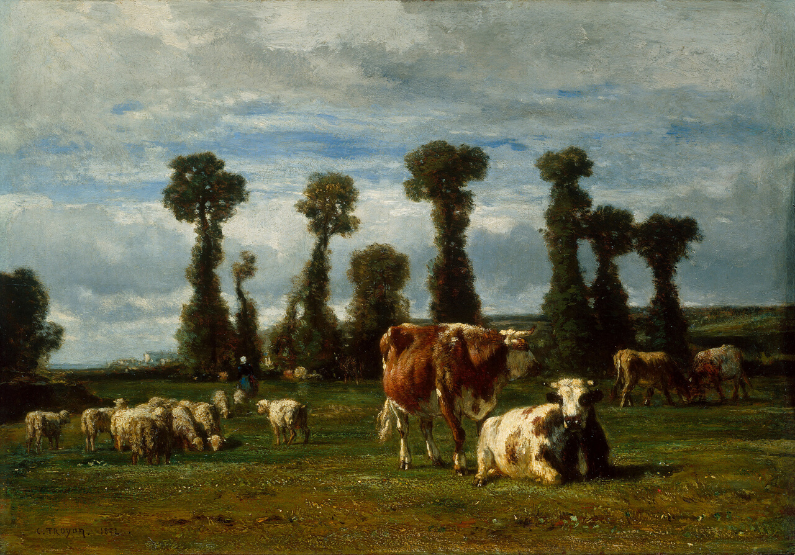
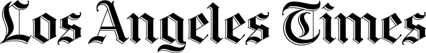
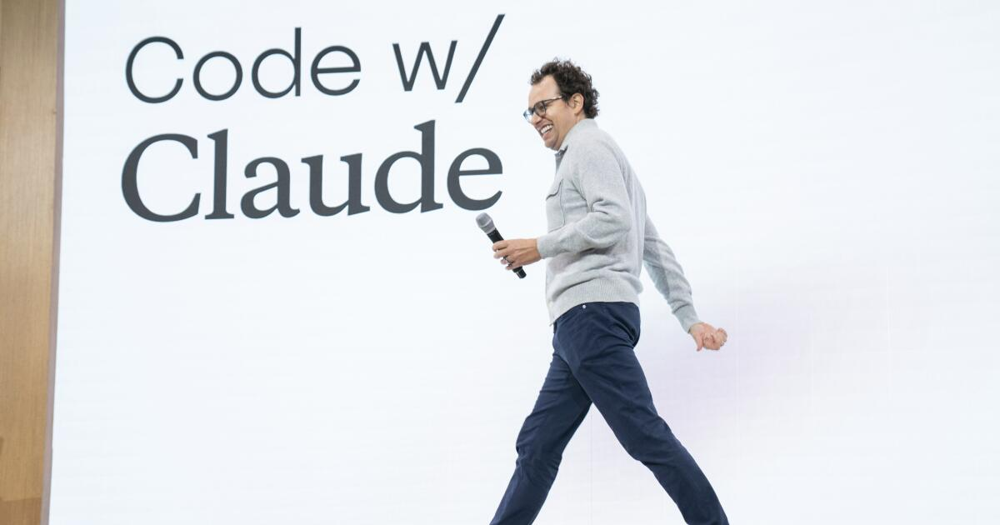
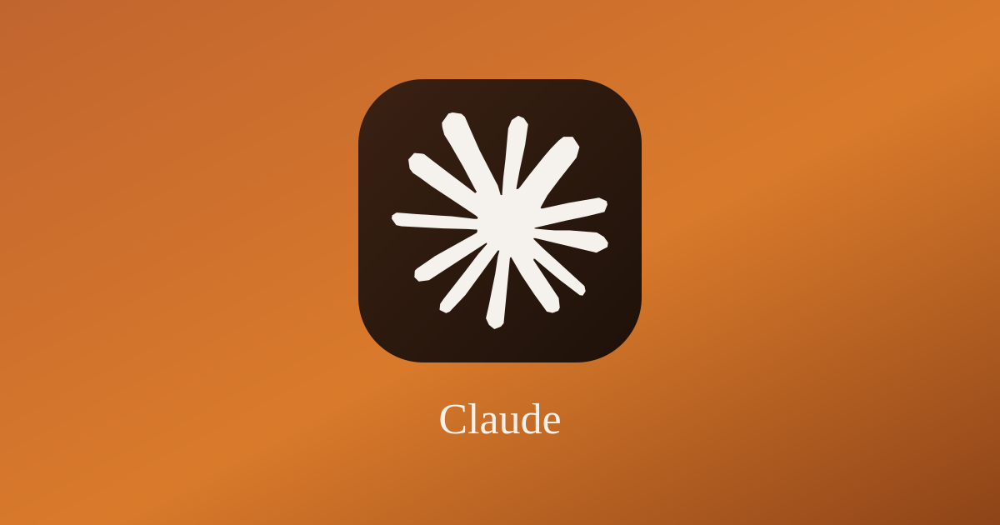
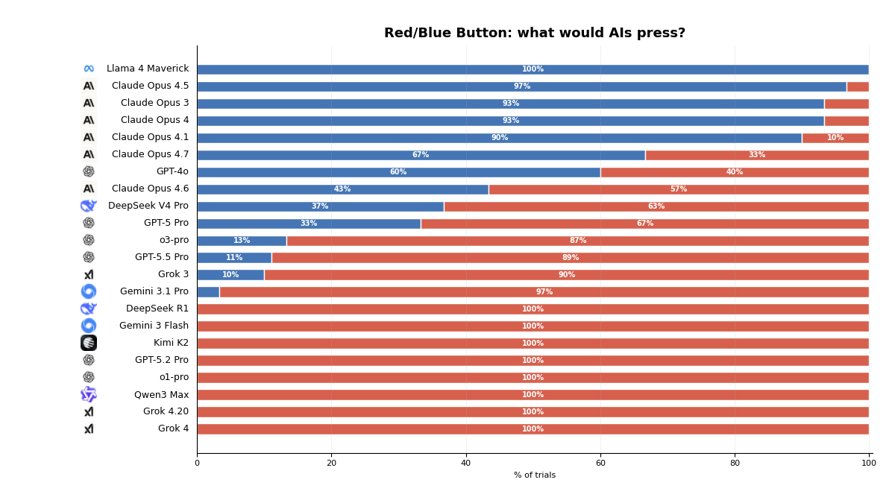
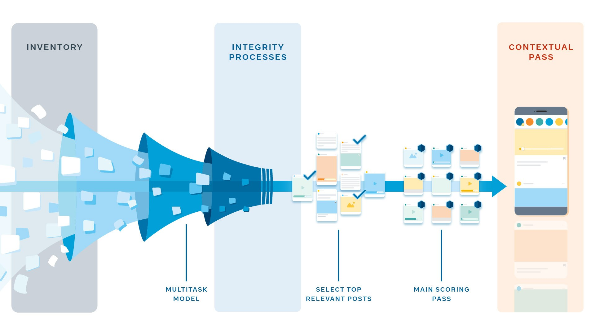
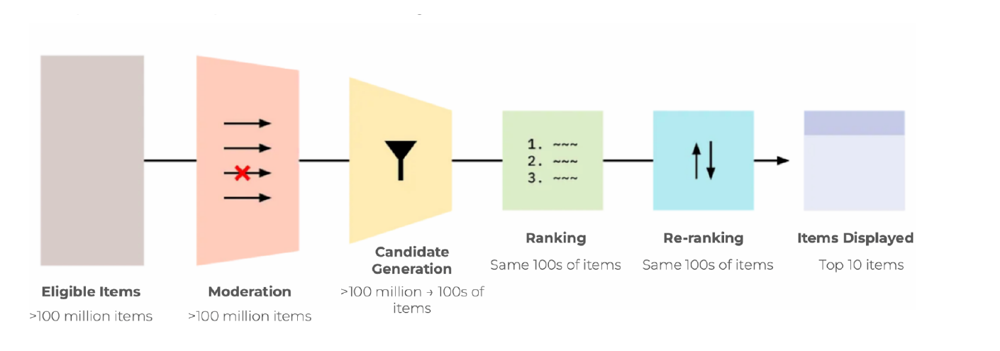

Review Theories of Ethics
CS 377, Week 4, Day 1 🟦 Racine 🟦
Review Theories of Ethics
CS 377, Week 4, Day 1 🟦 Racine 🟦
Map for Today
- Administrivia and questions
- Ethics in the News
- Book selection check-in
- Review ethical theories
- The button: Ostrom’s design principles
- Preview feed exercise / media diary

Meet your TA
Invitation/reminder
Turn off phones, laptops, other distractions
Ethics in the News
September 12, 2026: Anthropic CEO Dario Amodei calls on the AI industry to slow down, and rivals agree.
“Why read a book?”
- Reason #1: Feed and follow your curiosity
- Reason #2: Get used to self-directed learning
- Reason #3: Learn from human experts
- Reason #4: Escape in-depth
Table Discussion: Share your book selection!
- Which book did you choose? Who is the author?
- How did you find the book?
- How long is the book?
- What made you choose it?
- Have you started it? How do you like it so far?
Four Theories of Ethics
Four Theories / Approaches to Ethics
|
🏛
|
📖
|
|
📊
|
💟
|
Four Theories / Approaches to Ethics
|
🏛
Virtue Ethics
|
📖
Deontological
|
|
📊
Utilitarian
|
💟
Care Ethics
|
Review: The Deontic Square

The deontic square: every act is obligatory, permitted, omissible, or prohibited. Source: Wikipedia, “Deontic square”
{kind=link}
Connect the dots…
- William David Ross contended there are seven duties that determine what is right:
| Duty | Description |
|---|---|
| Fidelity | Keep promises and tell the truth |
| Reparation | Make amends for wrongful acts |
| Gratitude | Return kindness to those who give |
| Non-injury | Do not hurt others |
| Beneficence | Promote the aggregate good |
| Self-improvement | Improve your own condition |
| Justice | Distribute benefits and burdens equitably |
Different Flavors of Each Theory
📖 Deontological
- Agent-centered, patient-centered
- Act deontology, rule deontology
- Duty-based, rights-based
- Divine command
- Monistic, pluralistic
- Perfect duties, imperfect duties
- Source: SEP, Deontological Ethics, §2
📊 Utilitarian
- Act utilitarian, rule utilitarian
- Hedonistic, preference, or objectivist
- Maximizing, satisficing, or scalar
- Objective, expectational
- “Negative utilitarianism” (harm reduction)
- Source: SEP, Consequentialism, §§2–6 (sorts the by what is good, which consequences count, and for whom)
Different Flavors of Each Theory
🏛 Virtue Ethics
- Agent-based (focus on traits)
- Exemplarist (focus on saints, heroes, etc.)
- Perfectionistic, target-centered
- Care-based virtue ethics
- Universal, cross-cultural, or relativistic
- Source: SEP, Virtue Ethics, §2 “Forms of Virtue Ethics”
💟 Care Ethics
- Psychological or philosophical
- Maternal, political, global
- Micro-relational, institutional, structural (scales)
- Relational or principled (i.e. “individualistic”)
- Source: IEP, Care Ethics (sections on maternalism, political theory, international relations, applications, etc.)
More than Four
- Communitarianism: common good, social lives
- Responsibility ethics: individual accountability
- The “capability approach”: opportunities for achieving practical values (e.g. health)
- Others you know of?
- Other questions?
All at Once
Caleb Williams responds to an ethics question.
The Button
Where we left the button
- Two sections, 1% of the final grade, one button each
- payoff table
- Today: breaking down the “tragedy of the commons,” free riders
Elinor Ostrom (1933–2012)
- Political economist; Nobel Prize in Economics, 2009
- Studied irrigation systems, fisheries, forests, grazing land (“real commons”)
- Found groups that governed shared resources for centuries without privatizing or nationalizing
- “what rules let a group stop each other from defecting?”
- (as opposed to “will people defect?”)
Elinor Ostrom, Stockholm, December 2009. Photo: Holger Motzkau, CC BY-SA 3.0
.jpg){kind=link}
The Tragedy of the Commons (Hardin, 1968)
- Shared pasture, private herds
- Each herder gains from one more cow
- Shared cost of overgrazing
- Hardin: “only private property or coercion can save the commons”
- Ostrom: “communities govern themselves all the time!”

Constant Troyon, Pasture in Normandy, 1852, oil on panel. Art Institute of Chicago, Henry Field Memorial Collection. Public domain (CC0)
Ostrom’s Design Principles
- Clearly defined boundaries: who is in? What is the resource?
- Congruence: rules fit local conditions, costs proportional to benefits
- Collective-choice arrangements: people bound by the rules can change the rules
- Monitoring: by the members themselves, and/or by outside monitors
- Graduated sanctions: a first violation is not as bad as a second, third, etc.
- Conflict-resolution mechanisms
- Minimal recognition of the right to organize: outside authorities do not override the group
- Nested enterprises: moreso for large systems, governance in layers
Table Discussion (5 min): What will your section choose?
What was changed
- Timing (#1): “during any class meeting”: push after everyone left still counted.
- Now: while class is in session, from the start of the period until “see you next class”
- Monitoring (#4): a push now requires at least 8 other enrolled students present, in person, able to see it
- Monitoring (#4): the instructor tells a section when its own button has been pushed
The rules now read
A push counts only if an enrolled student pushes the button:
- in person, and
- while class is in session: from the start of the scheduled period until the instructor says “see you next class”, and
- with at least 8 other enrolled students present and able to see it
A push that misses any of these does not count.
The instructor will tell a section when its own button has been pushed, and share any letter of intent to refrain with both sections — but still will neither confirm nor deny whether the other section has pushed.
Everything else is unchanged: two pushes per section, the two letters, five minutes on request, final December 2.
Media Diary Exercise
Food in your Feed (Media Diary)
Due tomorrow night at 11:59pm
- Intended to be fun/informative/enjoyable!
- 20 data points and a few reflective questions
- Use the table (Account Name, Account Type, Ad?, # of Likes, Notes) for 20 posts from a feed of your choice (Instagram, TikTok, X, YouTube, etc.)
- Submit a PDF or a link to an online document (Google doc, GitHub repository)
- Will be our launching point for discussion on Wednesday
That’s all for today! See you Wednesday!
Ethical Issues in Algorithmic Feeds
CS 377, Week 4, Day 2 🟦 UIC-Halsted 🟦
Ethical Issues in Algorithmic Feeds
CS 377, Week 4, Day 2 🟦 UIC-Halsted 🟦
Ethics in the News
September 11, 2026: Anthropic reports that a cell in northern Yemen used its Claude models to develop missile-guidance software — and that the company’s own threat-intelligence team detected and shut it down.



Map for Today
- Ethics in the News
- Shuffle seats
- Warm-up discussion: red or blue button
- Feed algorithms 101
- Discuss samples from your feeds
- Values in ranking, with the ranking activity
- Previewing content moderation

🔀 Seat Shuffle
- Shuffle seats!
- Enter a seed and shuffle
Warm-up Discussion: Red Button or Blue Button
Red/Blue Button: What Would AIs Press?

Feed Algorithms
Facebook’s Feed System (2021)

Meta’s diagram of News Feed ranking: inventory → integrity processes → a lightweight multitask model → select top relevant posts → main scoring pass → contextual pass → your feed
Facebook’s Feed System, by the numbers
- 2+ billion people using Facebook, trillions of posts
- 1,000+ candidate posts eligible for any one person’s feed
- Thousands of signals per person feed the relevance predictions
- A lightweight model cuts the candidates down to ~500 posts
- The main scoring pass and contextual pass leave a few hundred posts in the feed at any given time
Generic Feed System Architecture
A typical recommender system proceeds in four stages:
- Moderation — remove items that violate platform policies
- Candidate generation — select high-potential items from a large pool (billions → thousands)
- Ranking — assign each candidate a numeric score for this user and context
- Re-ranking — reorder by ancillary goals (variety, freshness, safety)
Generic Feed System Architecture

The same four stages with the approximate number of items retained at each one for a large platform: >100 million eligible items in, top 10 items displayed. Source: Knight-Georgetown Institute, Recommender Systems 101, March 2025.
Table Discussion: Your Feed Sample (8 min)
- Which app did you use?
- When did you check it?
- What would you remove?
- How would you rate or grade this feed sample overall?
- What did not show up in your feed?
- Did this sample seem typical?
- What else stuck out to you?
Values in Ranking
News Values
- What goes on the “front page?”
- What makes an event important?
- Original study by Johan Galtung and Mari Holmboe Ruge (1965)
- “Elite” people and places
- Conflicts / scandals / disasters
- Follow-up by Tony Harcup and Deirdre O’Neill (2017)
A newsstand in Brighton, January 2012. Photo: Bobbie Johnson, CC BY-SA 2.0
{kind=link}
News Values (Harcup and O’Neill, 2017)
- Threshold/intensity
- Meaningfulness
- Clarity/unambiguity
- Consonance
- Composition
- Elite nations, people
- Negativity (conflict, disaster)
- Surprise
- Bad news (death, injury)
- Shareability
- Show business, sport, humor
- Follow-up stories
- Drama (searches, rescues, etc.)
- Local relevance to audience
- Magnitude of impact
Ranking Exercise
- See handout
- Items you want seen by more people should be ranked higher (1 = top item)
- Rank/remove all of them!
How did you decide the ranking?
“Can’t you just score the posts?”
- Current options on Reddit:
- Best, Hot, New, Top, Trending
- Ranking algorithms are opinions embedded in code
- See Evan Miller, “How Not To Sort By Average Rating”
Cathy O’Neil
- Mathematician (PhD, Harvard); taught at Barnard, then worked as a quant at the hedge fund D.E. Shaw
- Left finance after the 2008 crash and joined Occupy Wall Street’s alternative banking group
- Weapons of Math Destruction (2016): opaque, large-scale, damaging scoring systems — for teachers, borrowers, job applicants, defendants
- Writes the blog mathbabe; her firm audits algorithms
Cathy O’Neil at Google Cambridge, October 2016. Photo: GRuban, CC BY-SA 4.0
{kind=link}
Algorithms are opinions
Algorithms are opinions embedded in code…. They think algorithms are objective and true and scientific — that’s a marketing trick.
— Cathy O’Neil, “The era of blind faith in big data must end” (TED2017)
Crappy Ranking Options
- Score = (Positive ratings) − (Negative ratings)
- Used by Urban Dictionary
- Score = Upvote Percentage
- (Positive ratings) / (Total ratings)
- Can be skewed with a small number of observations
- Used by Amazon
Improved Ranking
- Your ideas?
- Technical fix: binomial proportion confidence interval
- Reddit hides the number of upvotes for the first few hours
Which ethical frameworks are at play? How?
|
🏛
Virtue Ethics
|
📖
Deontological
|
|
📊
Utilitarian
|
💟
Care Ethics
|
Previewing Content Moderation
What Is Content Moderation?
- The practice of monitoring and applying rules to user-generated content
- Decisions about what to allow, remove, label, or reduce in reach
- Carried out by humans, automated systems, or both
- Much more on this next class!
That’s all for today!
See you next week!
Appendix: Review and things I still need to convert
Review Question
“What is morally right is whatever aligns with the law.”
- [A] Virtue ethics
- [B] Utilitarian ethics
- [C] Care ethics
- [D] Deontological ethics
- [E] Polymorphic ethics
Review Question
“How can we best meet one another’s needs?”
- [A] Virtue ethics
- [B] Utilitarian ethics
- [C] Care ethics
- [D] Deontological ethics
- [E] Encapsulated ethics
Review Question
“Doing the right thing often involves a golden mean between deficiency and excess of a given trait.”
- [A] Virtue ethics
- [B] Utilitarian ethics
- [C] Care ethics
- [D] Deontological ethics
- [E] Recursive ethics
Review Question
“We must do the most good for the most people.”
- [A] Virtue ethics
- [B] Utilitarian ethics
- [C] Care ethics
- [D] Deontological ethics
- [E] Von Neumann ethics
Review Question
Which theory do you feel most aligned with so far?
- [A] Virtue ethics
- [B] Utilitarian ethics
- [C] Care ethics
- [D] Deontological ethics
- [E] Nihilism
Johan Galtung (1930–2024)
- Norwegian sociologist; founded the Peace Research Institute Oslo (1959) and the Journal of Peace Research (1964)
- Held the world’s first chair in peace and conflict studies (Oslo, 1969)
- With Mari Holmboe Ruge, asked a ranking question about the news: of everything that happens, why do these events become “news”?
- Their answer: a short list of news values — thresholds, elite nations and people, negativity, unambiguity — that works like a scoring function
Johan Galtung, 2007. Photo: David Lisbona, CC BY 2.0
{kind=link}
How Facebook ranks comments
- Comment sections get ranked too — civility classifiers and “prosocial” ranking push toxic replies down
- But down-ranking by tone can also bury legitimate viewpoints that happen to be unpopular
- Revel, Milli, Lu, Watson-Daniels, and Nickel borrow justified representation from social choice theory: if a large enough group shares a view, the top of the ranking owes them a comment
- The ranking question becomes a question about representation, not just quality
Instagram Notifications (Example of a “Tweak”)
- Notifications used to be ranked by predicted engagement alone — which sends you five near-identical alerts
- The tweak: a diversity check layered on top of the engagement models
- A notification too similar to recent ones — same author, content type, or format — is penalized and less likely to be sent
- Result Meta reports: fewer notifications per day, higher click-through rate
- Worth asking whose interests each knob serves
Gazing into feeds
He who fights with monsters should look to it that he himself does not become a monster. And if you gaze long into an abyss, the abyss also gazes into you.
— Friedrich Nietzsche
References & Credits
- GitHub source: https://github.com/jackbandy/ethical-issues-in-computing-uic/blob/main/docs/slides/week4.md.
- Last modified and compiled September 16, 18:58h.
- Day 1 title photo: Racine CTA by JeremyA, via Wikimedia Commons, CC BY-SA 3.0.
- Knight-Georgetown Institute, Recommender Systems 101 (March 2025) — the four-stage pipeline and the per-stage item counts; part of KGI’s Better Feeds: Algorithms That Put People First report.
- Johan Galtung and Mari Holmboe Ruge, “The Structure of Foreign News” (1965); Tony Harcup and Deirdre O’Neill, “What is News? News values revisited (again)” (2017).
- Evan Miller, “How Not To Sort By Average Rating”.
- Cathy O’Neil, Weapons of Math Destruction (Crown, 2016); the quotation is from her TED2017 talk, “The era of blind faith in big data must end”. Portrait: GRuban, Google Cambridge, October 2016, via Wikimedia Commons, CC BY-SA 4.0.
- Nick Hopkins, “Facebook’s internal rulebook on sex, terrorism and violence”, The Guardian (2017).
- UChicago, Online Content Moderation Policies from 43 Platforms.
- Schaffner et al., “Community Guidelines Make this the Best Party on the Internet”, CHI 2024.
- Elinor Ostrom, Governing the Commons: The Evolution of Institutions for Collective Action (Cambridge University Press, 1990), doi:10.1017/CBO9780511807763 — the eight design principles.
- Garrett Hardin, “The Tragedy of the Commons”, Science 162, no. 3859 (1968): 1243–1248.
- Elinor Ostrom portrait: Holger Motzkau, Nobel press conference, Stockholm, 2009, via Wikimedia Commons, CC BY-SA 3.0.
- Pasture in Normandy (1852) by Constant Troyon, oil on panel, Art Institute of Chicago, Henry Field Memorial Collection, public domain (CC0).
- Theory variants: Deontological Ethics, Consequentialism, and Virtue Ethics, Stanford Encyclopedia of Philosophy; Care Ethics, Internet Encyclopedia of Philosophy.
- Caleb Williams on Pardon My Take (Barstool Sports).
- Ethics in the news: Ted Hesson, Ian Duncan, and Gerrit De Vynck, “Top AI leaders unite to warn the technology is advancing too fast”, The Washington Post (September 12, 2026), lead photo by Chance Yeh/Getty Images; Ben Johansen and Owen Dahlkamp, “AI leaders endorse slowdown in their risky technology”, Politico (September 12, 2026), lead photo by Markus Schreiber/AP. Both cards are facsimiles built from each story’s own headline, deck, photo, and byline — not captures of the publications’ page designs. The essay both stories cover: Dario Amodei, “We Must Pace the Frontier”.
- Akos Lada, Meihong Wang, and Tak Yan, “How Does News Feed Predict What You Want to See?”, Meta Newsroom (January 26, 2021) — the ranking-flow diagram and the per-stage counts; the same illustrations are reproduced from that post.
- Manon Revel, Smitha Milli, Tyler Lu, Jamelle Watson-Daniels, and Maximilian Nickel, “Representative Ranking for Deliberation in the Public Sphere”, Proceedings of the 42nd International Conference on Machine Learning (ICML 2025), 51583–51613; also published by the Knight First Amendment Institute.
- Meta Engineering, “A New Ranking Framework for Better Notification Quality on Instagram” (September 2, 2025).
- News values: Johan Galtung portrait by David Lisbona, 2007, via Wikimedia Commons, CC BY 2.0; newsstand photograph by Bobbie Johnson, Brighton, January 2012, via Wikimedia Commons, CC BY-SA 2.0.
- NOVA, “Search Engine Breakdown” (21 minutes) — two researchers investigate racial bias built into widely used search engines.
- Seat shuffle tool: doethics.fun/in-progress/visual-seat-shuffle; countdown timer: doethics.fun/timer.
- Slide deck built with Quarto and Reveal.js.
{kind=link}

 Ethical Issues in Computing (CS 377)doethics.fun/slides
Ethical Issues in Computing (CS 377)doethics.fun/slides